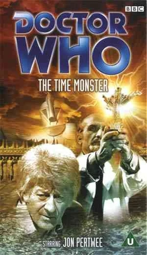
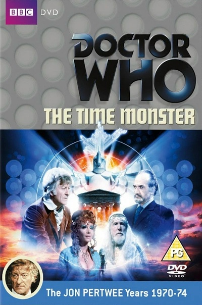
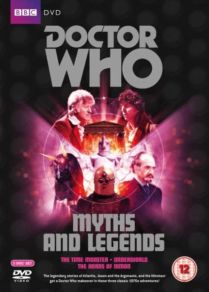
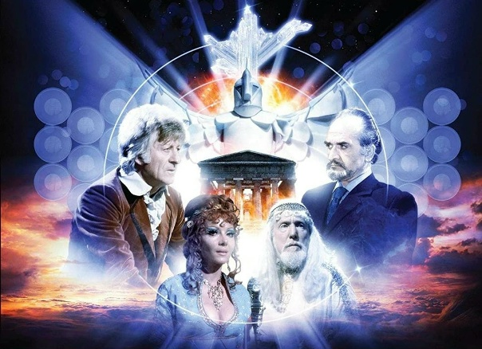
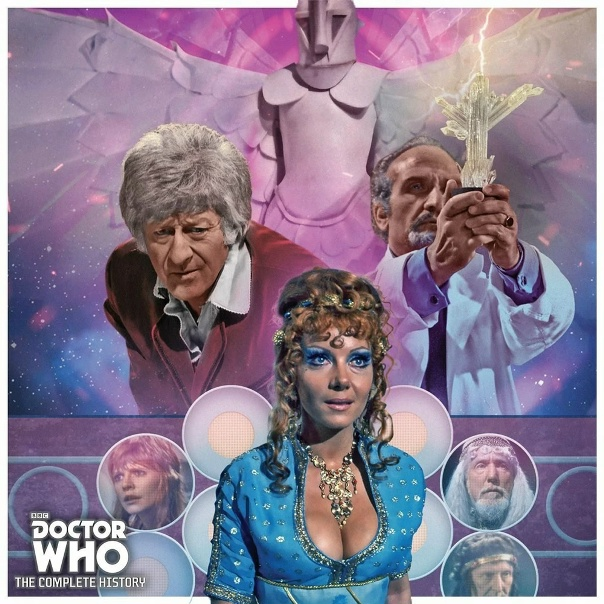

Эра Третьего Доктора (9 сезон)
<<< НАЗАД ||| 5. Временной монстр ||| ДАЛЬШЕ >>>
Субтитры: Русские и Английские |  |
|---|---|
+ RSC реконструкция цвета, 2010 (эпизоды 1-5) Субтитры: Русские и Английские | |
с обновлением визуальных эффектов (cunningmunki) Субтитры: отсутствуют | |
Дата выхода: 20 мая - 24 июня 1972
Формат: 6 эпизодов по 25 мин.
| Все эпизоды найдены в 525-строчном формате NTSC в 1983 г. * Цвет преобразован (PAL) |
|---|
 |  помощник |  помощник |  помощник |
Мастер под именем профессора Таскалоса работает в научно-исследовательском центре над проектом ТОМТИТ — устройством для передачи материи сквозь время. Доктор и ЮНИТ замечают аномалии и подключаются к расследованию. Мастер использует устройство, чтобы вытягивать объекты и существ из других эпох, и нацелен на нечто куда более масштабное, чем эксперимент. Серия примечательна тем, что это одна из немногих историй классического сериала, где ТАРДИС Доктора и ТАРДИС Мастера сталкиваются напрямую.
 VHS - ноябрь 2001 |   DVD+Boxset - 29 марта 2010 | Blu-ray - 20 марта 2023 * Версия в нашей группе |
|---|





Трейлер: